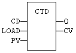
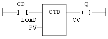
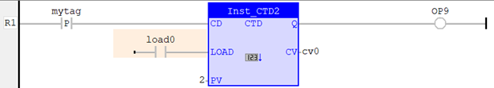
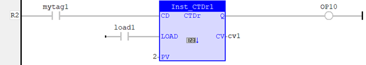

Function Block
Count down.
|
Name |
Type |
Description |
|
CD |
BOOL |
Enables counting. Counter is decreased on each call when CU is TRUE. |
|
LOAD |
BOOL |
Re-loads command. Counter is set to PV when called with LOAD to TRUE. |
|
PV |
DINT |
Programmed maximum value. |
|
Name |
Type |
Description |
|
Q |
BOOL |
TRUE when counter is empty, i.e. when CV = 0. |
|
CV |
DINT |
Current value of the counter. |
The counter is empty (CV = 0) when the application starts. The counter does not include a pulse detection for CD input. Use R_TRIG or F_TRIG function block for counting pulses of CD input signal. In LD language, CD is the input rung. The output rung is the Q output.
CTUr, CTDr, CTUDr function blocks operate exactly as other counters, except that all Boolean inputs (CU, CD, RESET, LOAD) have an implicit rising edge detection included. Not that these counters may be not supported on some target systems.
From firmware 3.03, CV is automatically initialised (pre-loaded) to the value of PV at start-up.
MyCounter is a declared instance of CTD function block.
MyCounter (CD, LOAD, PV);
Q := MyCounter.Q;
CV := MyCounter.CV;



On rising edge of ‘mytag’, CV is decremented by 1. When CV=0, then Q becomes TRUE and stays TRUE until ‘load0’ resets value of CV by copying the value of PV, that is 2 in this example.

This is the same application with Example 1 except for the internal rising edge detection on CD that is not necessary externally set as in CTD.